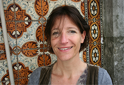

Met je eigen gevoelens, waarden en wensen in contact staan is een voorwaarde om met anderen te communiceren. Een beter, prettiger en effectiever gesprek begint dus bij jezelf en ik kan je daarbij helpen......
lees meerDe laatste fase van een leven hoeft niet alleen verdrietig te zijn of enkel een medisch circus. Het biedt ook een kans om terug te kijken, dingen waardig af te ronden en je naasten te zeggen wat je nog wilt zeggen. Ik begeleid je hierin en kan je ernaartoe zingen.......
lees meerMet een goede opleiding als fundament, word je pas echt een expert in en door de praktijk. Reflecteren op je eigen handelen en daarover met vakgenoten van gedachten wisselen (ook wel 'Intervisie' genoemd) is een prachtige manier om je professionaliteit te vergroten.Ik leer het je aan....
lees meer'Steeds meer zie ik dat de mate waarin een mens in staat is verbinding met zichzelf en met anderen te maken, de sleutel is tot geluk. Jezelf begrijpen, de ander begrijpen en begrepen worden. Het is de rode draad in mijn manier van coachen en begeleiden van individuen en groepen.' 'Soms kan iets niet beter gezegd worden dan via muziek. Zingen is een andere manier waarmee ik begeleiding biedt en ik de verbinding tussen mensen wil versterken.'
Janneke Geurts Opgeleid tot drs in de Sociale en Organisatie psychologie (RU Leiden, 1988-1994) ben ik mijn loopbaan gestart als trainer en coach op het snijvlak van de arbeids- en de klinische psychologie. De mens, ieder mens een uniek exemplaar, aan het werk in een omgeving met een eigen cultuur. Het kan een pracht ‘match’ zijn, maar het kan ook knellen. Op het gebied van stress, ziekteverzuim, persoonlijke effectiviteit, ingrijpende gebeurtenissen op het werk, leiderschap en teambuilding, ontwierp en gaf ik trainingsmodules aan leidinggevenden en begeleidde ik mensen individueel. Ik vervolgde mijn weg in het buitenland vanwege mijn privé situatie. In de 12 jaar die volgden heb ik, in drie verschillende landen, meer geleerd dan ik waar dan ook had kunnen leren. Ik werkte voor een luchtvaartmaatschappij, als reisbegeleider in de jungle, ik trainde Aziatische vrouwen in het geven van counselling, ik zette een crisisdienst mee op. Maar ook leerde ik afscheid nemen, de mensen en dingen die me lief waren geworden internaliseren. En daarna weer opnieuw beginnen, nieuwe vrienden maken, me thuis voelen op een vreemde plek. Ik bleef mezelf ontwikkelen middels training en opleiding. Toen mijn drie prachtdochters van een bodem waren voorzien, pakte ik mijn oude draad in de consultancy weer op. Tot vandaag de dag werk ik graag met mensen aan hoe zowel zijzelf als hun organisatie kunnen ‘bloeien’.
Vanaf 2009 sta ik weer op Hollandse bodem. Een nieuwe doelgroep diende zich aan, aan de universiteit van Groningen. Medisch studenten begeleiden bij hun professionele ontwikkeling is een voldoening gevend deel van mijn werk geworden. Daarnaast help ik mensen rust te vinden in een druk (werk)leven, leer hen hoe ze invloed uit kunnen oefenen op hun eigen welzijn. Ook groeit, conform mijn wens, mijn werk op het gebied van ‘afscheid nemen’, waarbij mijn eigen ervaringsdeskundigheid zeker meespeelt. Ik loop een eindje met mensen mee in de laatste levensfase, om ze te ondersteunen bij het waardig afronden van hun leven. Ik doe dit middels (familie)gesprekken, door het optekenen van levensverhalen en brieven, en door voor hen te zingen. Zang is voor mij altijd de rode draad geweest door het lief en leed dat ik heb meegemaakt in mijn leven. Muziek maken troost en inspireert mij. Het maakt wat zwaar is licht(er). Wat begonnen is in de badkamer, is uitgegroeid tot een semi-professionele bezigheid. Ik kan met mijn zang anderen 'verlichten' in een intensieve periode en een aanzet te geven voor de juiste woorden, zolang het nog kan. In de huiskamer, op een slaapkamer, in het ziekenhuis of hospice, of waar dan ook. Met een gedegen zangopleiding en prachtige instrumentale begeleiding als steun in de rug, kan ik zeggen dat ik een zingende psycholoog of een ‘psychologende’ zangeres ben geworden. Janneke Geurts (formeel cv op verzoek)
Janneke Geurts
Drs Sociale en Organisatie psychologie
Boerlandspad 3
9755 PG Onnen (10 km ten zuiden van Groningen)
06-272 38 270,
janneke @frensgeurts.com
KvK 01158241